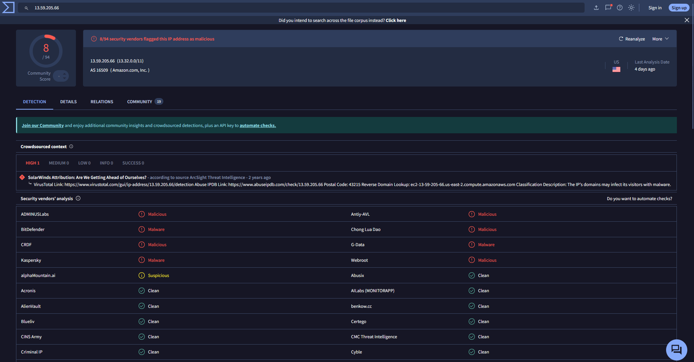
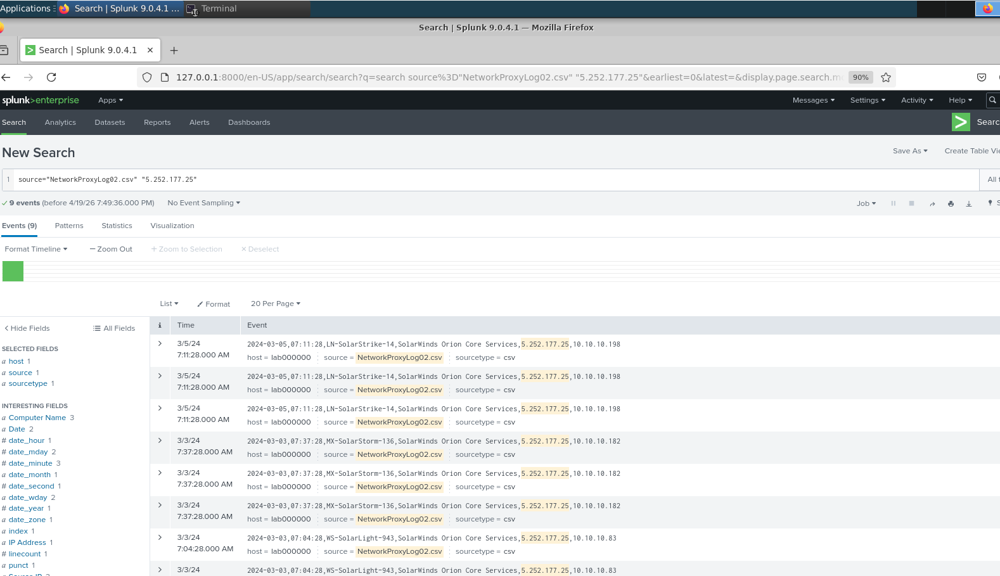
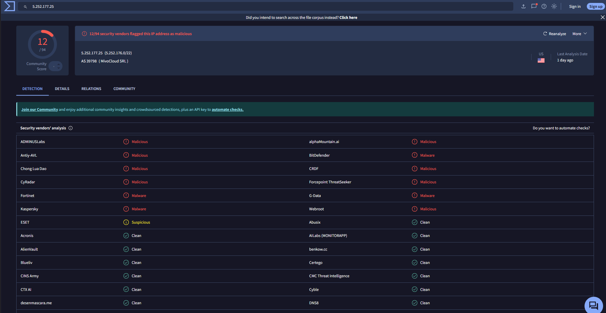
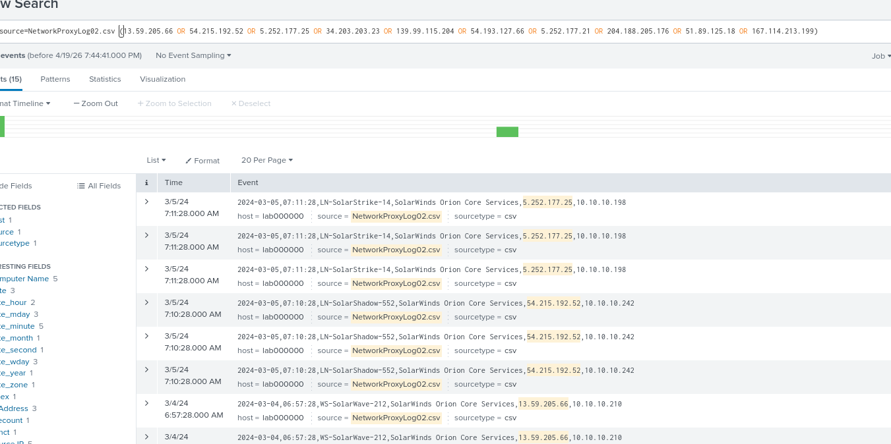

01
Overview
This Project 7 submission correlates a list of suspicious external IP addresses against
NetworkProxyLog02.csv in Splunk. Matched events reference SolarWinds Orion Core
Services and internal hosts with Solar*-style names. Matching IPs were then checked on
VirusTotal for vendor reputation context.
Course materials for this unit also describe a separate CSIRT handoff exercise (Catalyst case
IR-2023-002, first responder Sam Johnson). That written triage / gap /
recommendation analysis is not present in the PDF used for this archive entry, so it is left
unpublished here.
02
Goals
- IOC correlation
- Search proxy telemetry for a provided indicator set and record match time, IP, and affected hosts or services.
- Reputation research
- Look up matched IPs in VirusTotal (and related sources) to add context beyond the raw log line.
- Dashboard query
- Capture the Splunk search used to surface the IOC set in one view.
03
Match 1 · 13.59.205.66
- IP
13.59.205.66- Event time
- 2024-03-04, 06:57:28
- Affected
- SolarWinds Orion Core Services
- VirusTotal
- 8/94 vendors flagged the IP; AS16509 Amazon.com, Inc. (US); reverse DNS
ec2-13-59-205-66.us-east-2.compute.amazonaws.com.

13.59.205.66.04
Match 2 · 5.252.177.25
- IP
5.252.177.25- Event time
- 2024-03-03, 07:37:28
- Affected hosts
MX-SolarStorm-136,LN-SolarStrike-14,WS-SolarLight-943- VirusTotal
- 12/94 vendors flagged the IP; AS39798 MivoCloud SRL.

5.252.177.25 in
NetworkProxyLog02.csv.
5.252.177.25.05
Dashboard Query
Search used to generate the Splunk view over the IOC set:
source="NetworkProxyLog02.csv" ("13.59.205.66" OR "54.215.192.52" OR "5.252.177.25" OR "34.203.203.23" OR "139.99.115.204" OR "54.193.127.66" OR "5.252.177.21" OR "204.188.205.176" OR "51.89.125.18" OR "167.114.213.199")